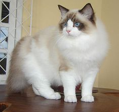

Wikipedia Tiếng Việt
Bạn chính là tác giả của Wikipedia
1.289.165 bài viết và 937.511 thành viên
Tạo bài
Sửa bài
Tải hình
Quy tắc
Đặt câu hỏi

|
Bạn có biết |
Mèo Ragdoll là một giống mèo với đôi mắt màu xanh dương và bộ lông hai màu tương phản đặc trưng. Nó là giống mèo to lớn với cơ bắp rắn chắc và bộ lông mềm mại và hơi dài[1] Chúng cũng được biết đến là giống mèo hiền lành và dễ bảo. Mèo Ragdoll được một người gây giống Hoa Kỳ tên là Ann Baker phát triển và cái tên Ragdoll xuất phát từ thói quen rũ người ra và thả lỏng cơ thể khi được bế lên của các cá thể mèo đời đầu tiên. Trong thập niên 1960, Ann Baker bắt đầu công việc gây giống với một cá thể mèo nhà tên là Josephine. Josephine là một cô mèo cái không thuộc nòi tốt, lai giữa mèo Ba Tư và mèo Angora Thổ Nhĩ Kỳ với bộ lông dài trắng và đã sinh hạ một vài lứa mèo "thông thường". Trong số cha của những lứa mèo con này có những con mèo thuộc nòi Birman - một trong số đó có bộ lông hai màu đậm nhạt trông giống như mèo Xiêm. Một ngày nọ Josephine bị một chiếc xe hơi tông phải và phải điều trị chấn thương trong một bệnh viện thuộc Đại học California. Baker tin rằng trong quá trình điều trị, Josephine đã trải qua một số cuộc thí nghiệm về di truyền trong một chương trình bí mật do chính phủ thực hiện và bà cũng khẳng định rằng kết quả của các cuộc thí nghiệm đó khiến Josephine trở nên ngoan ngoãn, dễ bảo, giỏi chịu đau và trở nên nhũn người ra khi được bế lên. Cũng theo Baker, những đứa con của Josephine cũng mắc chứng "nhũn người" như mẹ vì chúng vẫn còn nằm trong bụng mẹ khi Josephine bị xe tông phải. Tuy nhiên chưa có bằng chứng nào minh định cho những lời nói của Baker. Quay về chuyện của Josephine, sau khi hồi phục, nó tiếp tục sinh ra những con mèo con với tính tình hiền lành và dễ bảo. Baker bắt đầu tin rằng mình đang có trong tay một nòi mèo đặc biệt và bà bắt tay vào việc gây dựng giống mèo này - mà ngày nay được biết với tên gọi Ragdoll. Giống mèo Ragdoll được các nhà gây giống mèo gây dựng và chọn lọc kỹ lưỡng qua nhiều năm, tập trung vào việc bảo tồn và phát huy các đặc điểm nổi bật của chúng như kích thước lớn, tính tình hiền lành và thói quen rũ người ra khi được bế cũng như bộ lông hai màu đặc trưng...
